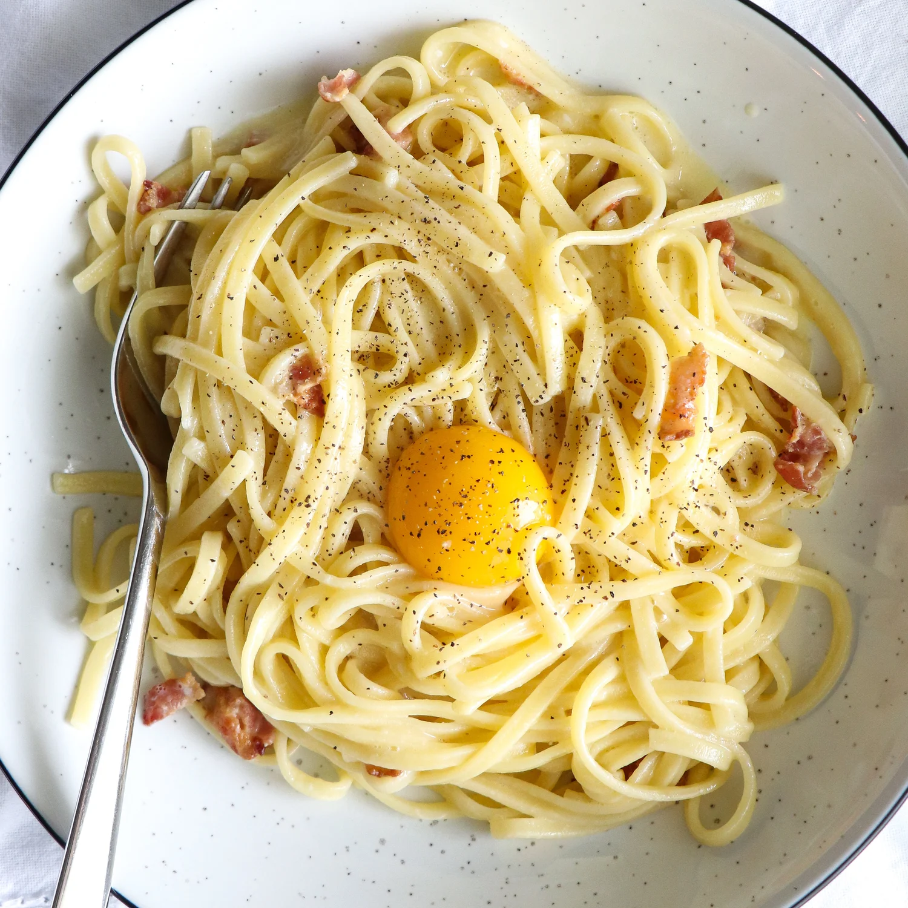

Home
Recipe for Carbonara

Description
This recipe takes just 30 minutes to make
Luscious and wonderfully indulgent, pasta takes as long as it takes to make as it does to cook the pasta
Ingredients
- 1 tablespoon extra virgin olive oil or unsalted butter
- 1/2 pound pancetta or thick cut bacon, diced
- 1 to 2 garlic cloves, minced, about 1 teaspoon (optional)
- 3 to 4 whole eggs
- 1 cup grated Parmesan or pecorino cheese
- 1 pound spaghetti (or bucatini or fettuccine)
- Kosher salt and freshly ground black pepper to taste
Steps
- Heat the pasta water
- Saute the pancetta or bacon and garlic
- Beat the eggs and half of the cheese
- Cook the pasta
- Toss the pasta with pancetta or bacon
- Add the beaten egg mixture